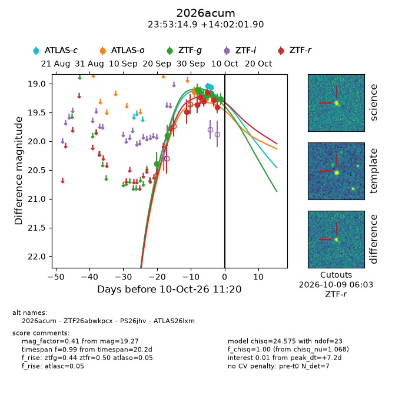
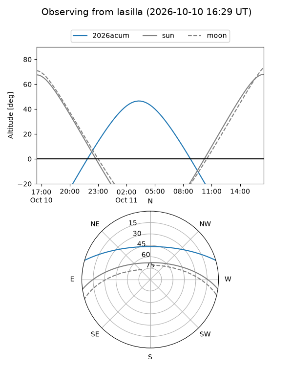
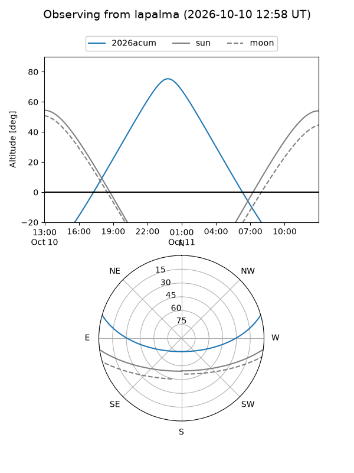
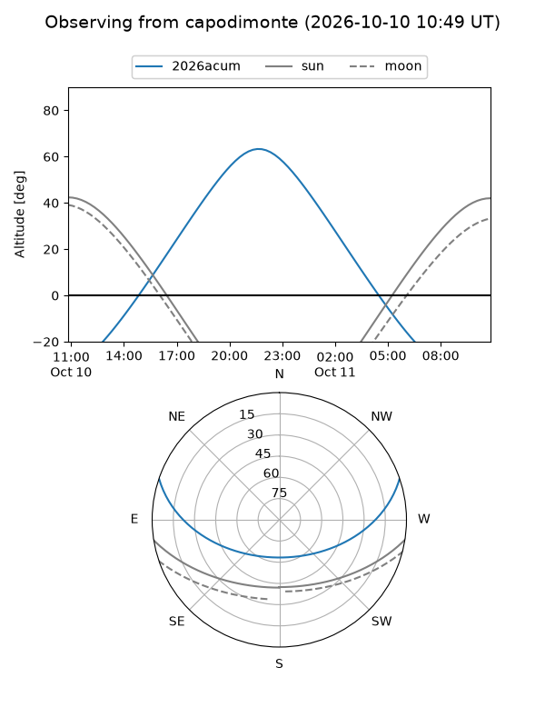
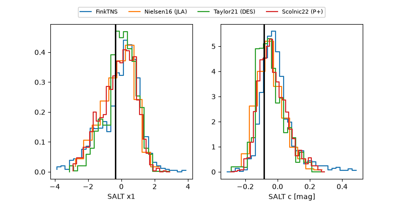

2026acum
Target 2026acum at 2026-10-10 11:21
Aliases and brokers:
FINK-ZTF: ztf.fink-portal.org/ZTF26abwkpcx
Lasair-ZTF: lasair-ztf.lsst.ac.uk/objects/ZTF26abwkpcx
ALeRCE-ZTF: alerce.online/object/ZTF26abwkpcx
YSE-PZ: ziggy.ucolick.org/yse/transient_detail/2026acum
TNS name: wis-tns.org/object/2026acum
Direct TNS query: direct search
alt names
ZTF26abwkpcx (ztf,fink_ztf)
2026acum (tns,yse)
ATLAS26lxm (atlas)
PS26jhv (panstarrs)
Coordinates:
equatorial (ra, dec) = 358.3120,+14.03386
equatorial (HMS+DMS) = 23:53:14.89,+14:02:01.90
galactic (l, b) = (102.2059,-46.48290)
Flags:
peak dt: +7.2
Photometry:
last atlasc=19.24, atlaso=19.26, ztfg=19.27, ztfr=19.41
3 atlasc, 2 atlaso, 10 ztfg, 7 ztfr detections
Lightcurve

Visibility



Additional plots
